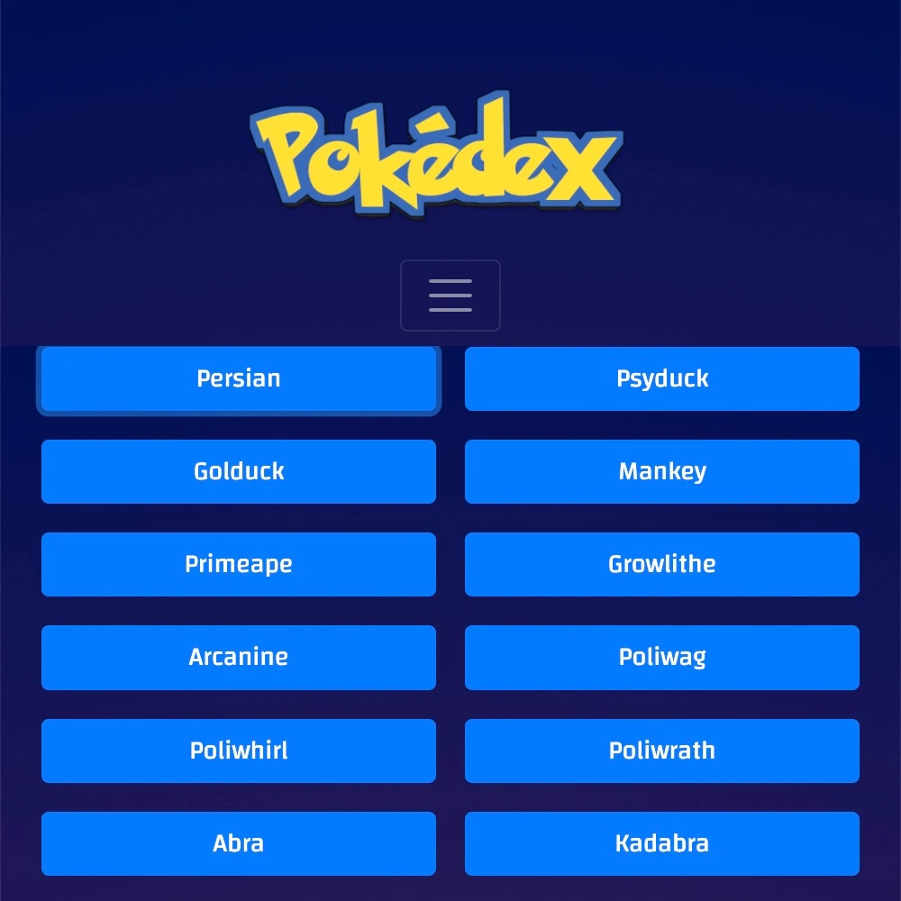
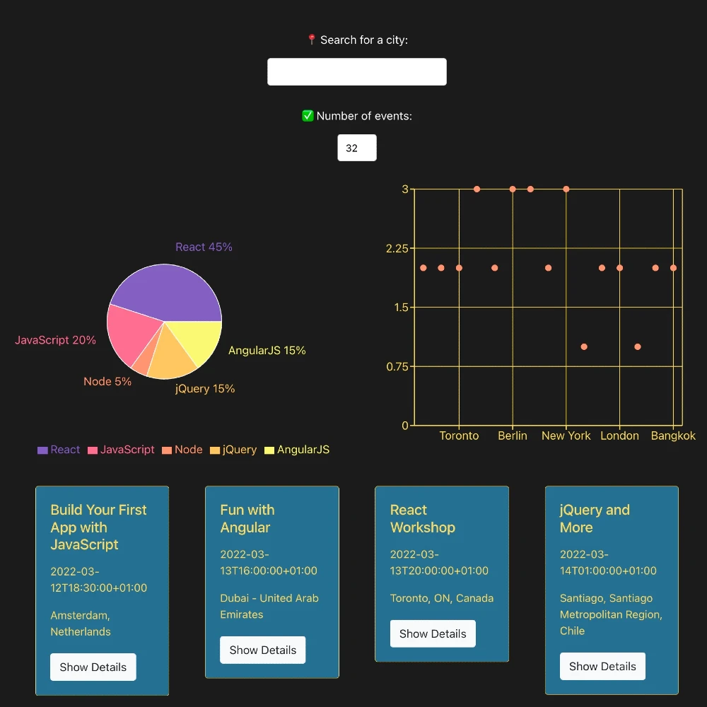

Work
Pokedex App
Small web application with HTML, CSS, and JavaScript that loads a list of data from an external/public API and enables the viewing of more details for a given data item on demand.
View on GitHubView Pokedex App
Music Movies API
The Music Movies API is the complete server-side component of the myMusicMovies web application providing users with access to information about different music movies including details about genres, actors, directors, artists, and more. Users will be able to sign up, update their personal information, and create a list of their favorite music movies.
View on GitHubMusic Movies Client
The Music Movies Client React App is the client-side component of the myMusicMovies web application based on its existing server-side code (REST API and database) using the MERN stack.
View on GitHubmeetFS App
The meetFS App is a serverless, progressive web application (PWA) built with React using test-driven (TDD) and behaviour-driven development (BDD) approaches. The application accesses the Google Calendar API to fetch upcoming events for full-stack web developers.
View on GitHubView meetFS App
Project title
The Meet App is a serverless, progressive web application (PWA) built with React using TDD and BDD approaches. The application accesses the Google Calendar API to fetch upcoming events for full-stack web developers.
Link to project